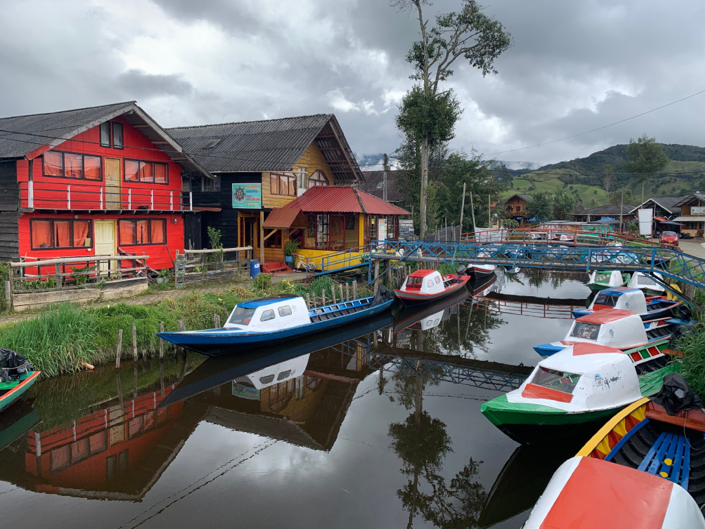
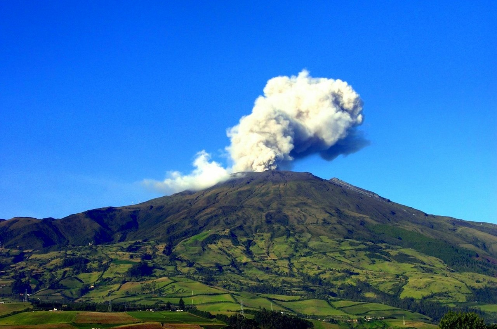
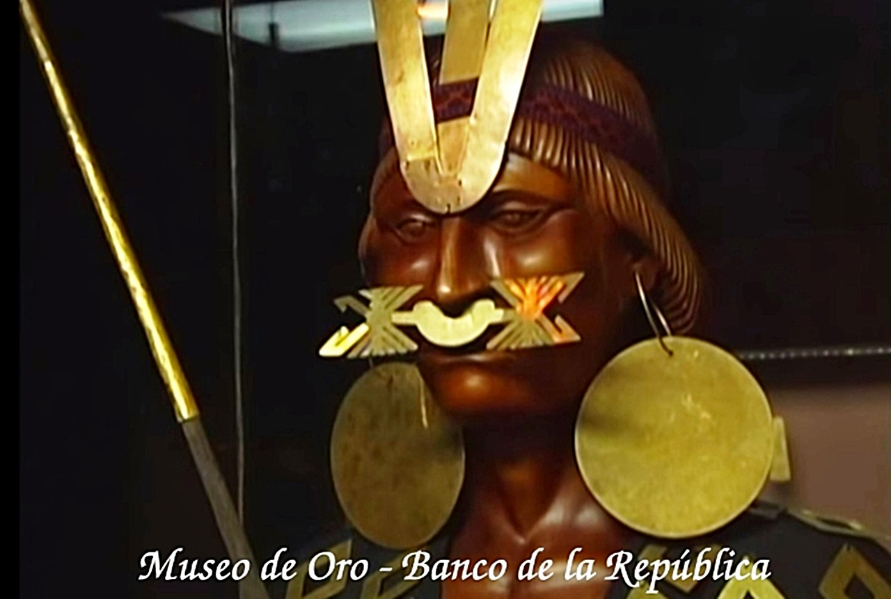
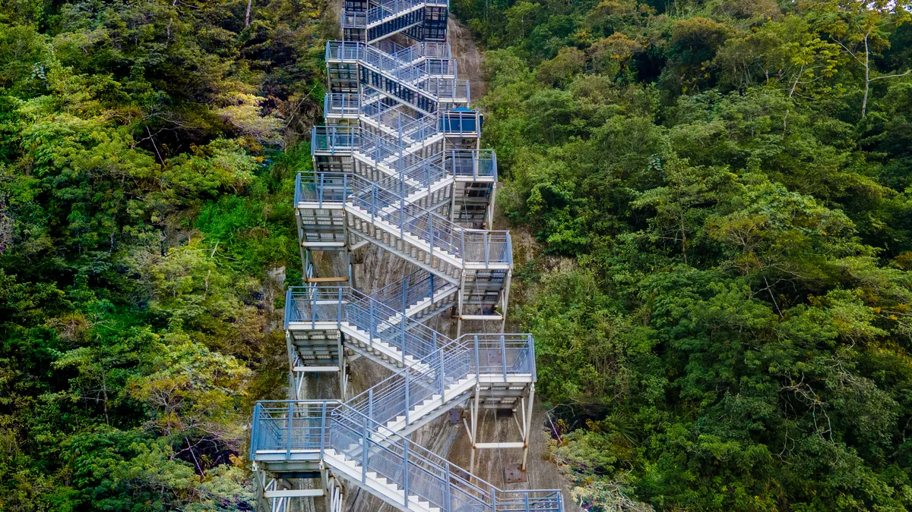
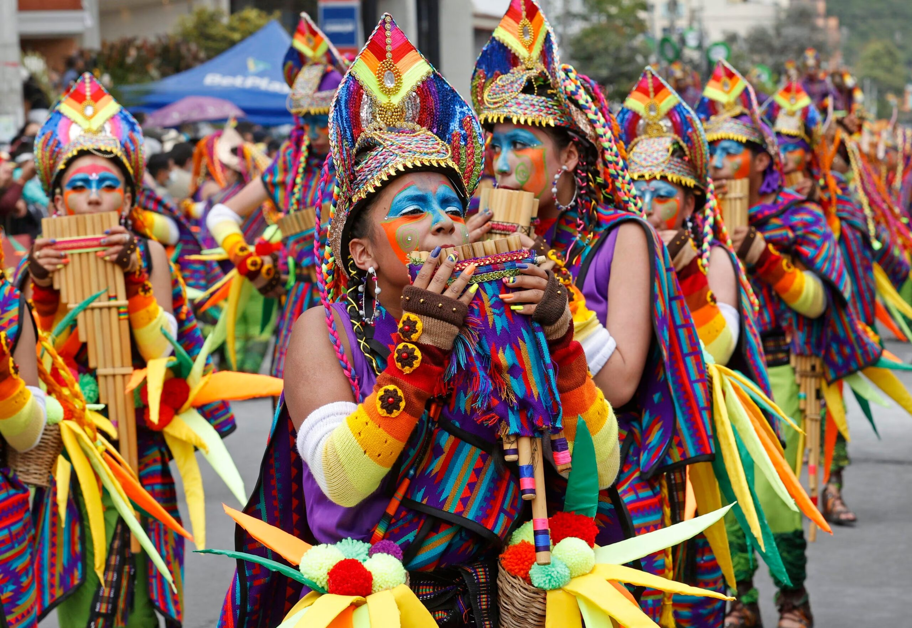
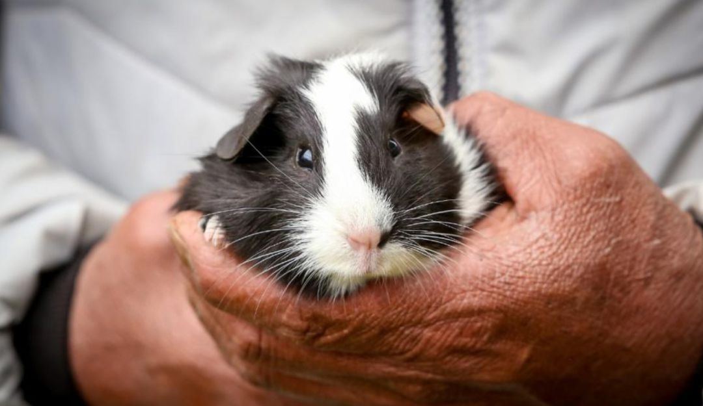
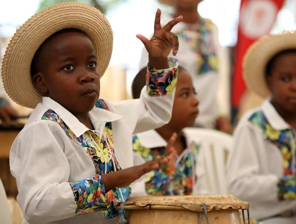
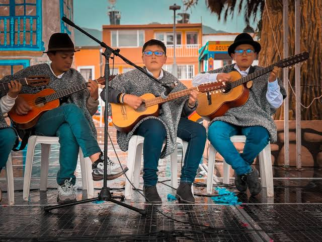
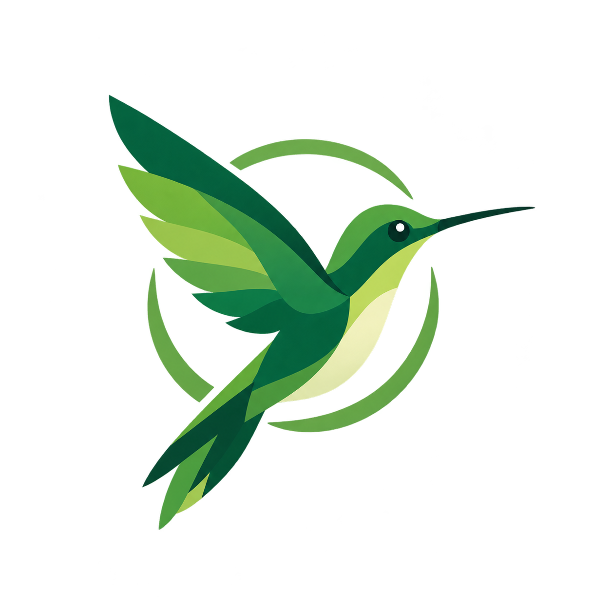

NaturalezaLaguna de La Cocha
El Encano, Pasto, Nariño
Un refugio andino donde las montañas abrazan el agua y la niebla cuenta historias. Descubre el encanto místico del segundo lago más grande de Colombia.
★★★★★ 0.0
$150.000
Santuario de Las Lajas
Ipiales, Nariño
Una joya arquitectónica que desafía el abismo y parece suspendida en el cielo. Déjate maravillar por el templo más hermoso del mundo, tallado en el corazón de un cañón.
★★★★★ 0.0
$155.000

AventuraVolcan galeras
Pasto, Nariño
El Volcán Galeras es uno de los paisajes más representativos de Nariño. Su entorno natural alberga bosques andinos, páramos y una gran diversidad de flora y fauna.
★★★★★ 0.0
$200.000
Tumaco
Tumaco, Nariño
Donde la selva se funde con el mar al ritmo de la marimba. Déjate conquistar por la magia ancestral, las playas exóticas y el sabor único del Pacífico nariñense.
★★★★★ 0.0
$180.000

CulturaMuseo del Oro
Pasto, Nariño
Este espacio cultural permite conocer piezas arqueológicas y expresiones artísticas relacionadas con las culturas ancestrales de la región.
★★★★★ 0.0
$40.000

NaturalezaLas Gradas de Belen
Sandona, Nariño
Las Gradas de Belén representan uno de los miradores y paisajes más hermosos de Sandoná, Nariño. Este encantador sendero conecta la tradición artesanal de la región con la majestuosidad de su entorno natural y su famosa cascada.
★★★★★ 0.0
$195.000
Eventos próximos
Vive las tradiciones, los sabores y las celebraciones que llenan de vida a Nariño. Descubre las experiencias culturales que hacen especial a nuestra región.

FestividadCarnaval de Negros y Blancos
Un desfile lleno de carrozas monumentales hechas a mano, música en vivo, polvos de colores y comparsas tradicionales que recorren las calles.

GastronomiaFestival del Cuy y Cultura Campesina
¿Cuyes disfrazados y el plato más famoso del sur en un solo lugar? Descubre el festival más curioso, alegre y delicioso de la cultura andina.

Cultura y MusicaFestival Internacional del Currulao
Encuentro puramente cultural donde las cantaoras y los tocadores de marimba, cununos y bombos compiten por mantener vivas las raíces africanas
Fiesta de la Virgen del Rosario
Una de las fiestas patronales más masivas del departamento, donde llegan miles de peregrinos de Colombia y Ecuador a bailar y cumplir promesas.

Cultura y MusicaFestival de Musica de Cuerdas
Música andina en vivo con tiples, bandolas y guitarras. Siente el ritmo y el gran nivel de los músicos de nuestra región.
Ahorra con ofertas especiales
Encuentra promociones especiales y vive nuevas experiencias mientras descubres los encantos de Nariño.
¡Celebra tu cumpleaños en Nariño!
Convierte tu día especial en una experiencia inolvidable. Descubre una promoción pensada para celebrar y compartir.

Un momento especial para mamá
Regálale una experiencia diferente y descubre lugares maravillosos para compartir momentos que se conviertan en recuerdos.
Una aventura para papá
Un Respiro para Ella
Una escapada en familia
Preguntas frecuentes
¿Qué es Wayra Kawsay?
Wayra Kawsay es un portal turístico dedicado a dar a conocer los destinos, eventos, actividades y atractivos de Nariño.
¿Por qué nos llamamos Wayra Kawsay?
Nuestro nombre proviene del quechua y representa viento y vida, conceptos que evocan movimiento, libertad y nuevos horizontes.
¿Cómo puedo conocer las ofertas disponibles?
Puedes consultar las promociones en la sección de Ofertas y revisar sus condiciones y temporadas de aplicación.
¿Cómo puedo explorar los destinos turísticos?
En la sección Destinos puedes descubrir lugares de Nariño y utilizar los filtros para encontrar experiencias de tu interés.
¿Puedo contactar directamente a los proveedores?
Sí. El portal facilita los medios de contacto para que puedas comunicarte directamente con los proveedores turísticos.
¿Puedo realizar reservas o pagos desde el portal?
No. Wayra Kawsay es una plataforma informativa y de contacto. Las reservas y los pagos se coordinan directamente con cada proveedor.
¿Tienes un negocio turístico en Nariño?
Si tienes una iniciativa que represente la identidad de Nariño y sus riquezas culturales y turísticas, contáctanos. Nos interesa conocer propuestas que contribuyan a dar mayor visibilidad a nuestra región.
Contáctanos
¡Bienvenido de nuevo!
Inicia sesión para continuar o crea una cuenta para comenzar.
¡Tu próxima aventura comienza aquí!
¡Nariño te espera!
✦ Descubre destinos sorprendentes
✦ Conoce nuestras tradiciones e historia
✦ Encuentra experiencias inolvidables
✦ Explora mapas, rutas y ofertas turísticas
 WhatsApp
WhatsApp
¡Hola! 👋
Hola, estamos en línea y estamos dispuestos para resolver todas tus inquietudes. Escríbenos y te responderemos en menos de diez minutos.
Abrir chat